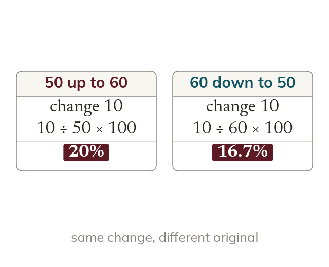

Percentage change as a formula
Percentage change = change ÷ original ×
The change is the new amount minus the original. The original is always the denominator.
Percentage change measures how big a change is relative to where it started. It's calculated as (change / original) × where the change is the new amount minus the original amount. The original amount is always the denominator - this is why a rise from to (a change of is a increase while the reverse fall from to (also a change of is a smaller decrease even though the change itself is the same size.